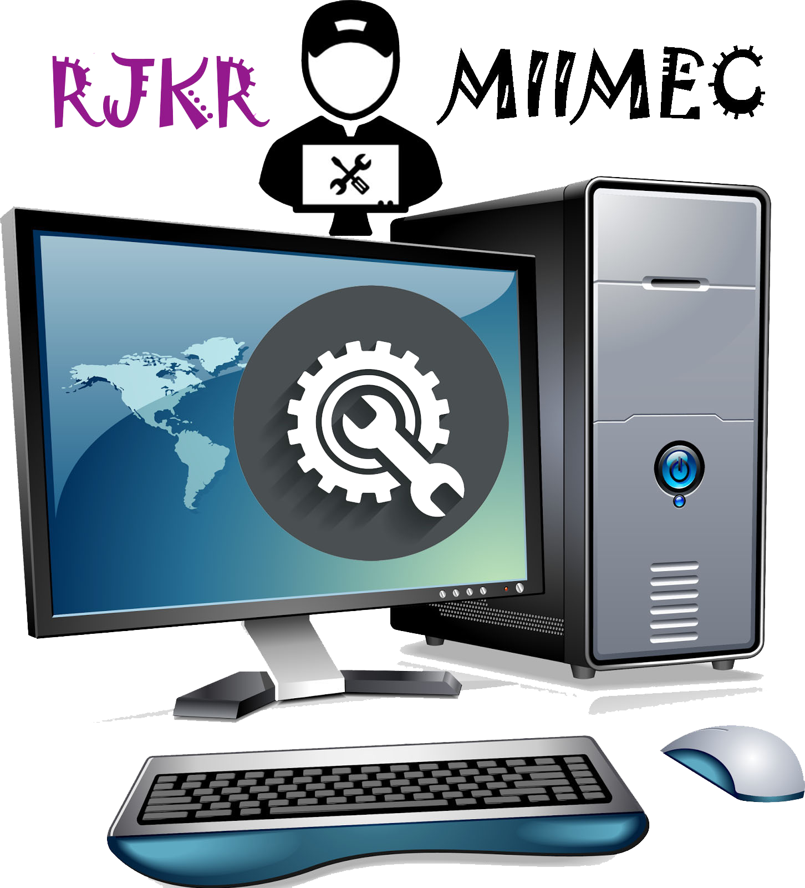

HISTORIA Y EVOLUCIÓN DE TODOS LOS SISTEMAS OPERATIVOS
Historia y evolución de todos los sistemas operativos (S.O) creados hasta la fecha. Una lista cronológica de todos aquellos S.O. que vieron la luz, uno de ellos se quedó entre nosotros, y otros que no tuvieron lo necesario para quedarse, en una época, donde todos querían ser el “popular” de los PC. Cada día que enciendes tu ordenador para trabajar, divertirte, navegar por la web, jugar y hacer muchas otras cosas. Unos segundos después de presionar el botón “power”, un componente muy importante entra en juego: el sistema operativo. Hoy, el mercado está bien segmentado, pero mucha gente todavía usa Windows. Sin embargo, la historia no siempre ha sido así. Con los años, varias empresas han desarrollado sistemas para adaptarse a diferentes tipos de usuarios. En el inicio la computación estaba sin forma y era vacía Los ordenadores/computadoras gigantes que ocupaban cuartos enteros y que necesitaban la ayuda de los seres humanos, que aparecieron aproximadamente en 1950. En los primeros años, las tareas se llevaron a cabo por técnicos, los cuales dictaban lo que sería realizado a través del hardware. Un empleado era contratado especialmente para activar y desactivar las llaves, la cuales servían para indicar si un componente debe estar encendido o apagado. Cuando se cerraba la llave, por ejemplo, la información corría por metros o kilómetros de cables y encendía una luz, indicando que determinada funciona estaba desactivada. En aquella época, era común para una persona desarrollar programas de ordenador. A pesar de trabajar para las tareas necesarias, estos equipos siempre necesitaban de la intervención humana y no podían usar rutinas programadas. La historia cambio con el primer sistema operativo, aquí todos una lista de todos esos S.O. fueron creados hasta el momento.
1950Los S.O. hacen una aparición bastante simple, con conceptos tales como el monitor residente, el proceso por lotes y el almacenamiento temporal. El GM-NAA I/O (1956): Fue creado por Robert L. Su función principal era ejecutar automáticamente un nuevo programa, una vez que el que se estaba ejecutando terminaba. CTSS (1961): Fue desarrollado en el Centro de Computación del MIT. Fue descrito en una publicación presentada en la Spring Joint Computer Conference de 1962. EXEC II (1962): De tipo Procesamiento por lotes desarrollado para la computadora UNIVAC 1107. Reúne los trabajos comunes para ejecutarlos al mismo tiempo, evitando las colas de espera de dos o más trabajos, como sucede en el procesamiento en serie. EXEC 8 (1964): Fue uno de los primeros S.O de multiprocesamiento con éxito comercial. Soportaba cargas de trabajo mixto simultáneo que comprendían procesamiento por lotes, tiempo compartido y en tiempo real. UNIX (1969): Es un S.O portable, multitarea y multiusuario; desarrollado por un grupo de empleados de los laboratorios Bell de AT&T OS/8 (1971): Era el sistema operativo más utilizado en el PDP 8 minicomputadora desarrollada por Digital Equipment Corporation. VM/CMS (1972): Es un S.O. de máquina virtual que se anunció para el público en 1972 por IBM. Su entorno permite la ejecución, creación y depuración de aplicaciones, gestión de archivos de datos, en general es el encargado de aceptar las órdenes del usuario y convertirlas en instrucciones que el CP es capaz de ejecutar. CP/M (1976): fue desarrollado por Gary Kildall para el microprocesador Intel 8080. Se trataba del sistema operativo más popular entre las computadoras personales en los años 70. Apple DOS o APPLE II (1978): Fue un S.O. para la serie de microordenadores de la serie Apple II. Anteriormente al lanzamiento de Apple Dos 3.1 los usuarios tuvieron que depender de cintas de casete de audio para el almacenamiento de datos y la recuperación pero aquel método era notoriamente lento y poco fiable. NLTSS (1979): funcionó inicialmente en un CDC 7600 ordenador, pero sólo se ejecutó la producción de alrededor de 1985 hasta 1994 en Cray computadoras, incluyendo el Cray-1, Cray X-MP y Cray Y-MP modelos SOS (1980): Fue el S.O. de la computadora personal de Apple III, desarrollado por Apple Inc. SunOS (1982): Se convirtió en la primera versión de MS-DOS. A partir de aquí sucedieron una serie de cambios hasta llegar a la versión 7.1, versión 8 en Windows Milenio. ProDos (1983): Fue el último SO oficial que podía utilizarse en todas las series de ordenadores Apple II. Se distribuyó hasta 1993 MSX-DOS (1984): En la primera generación, ni siquiera tenían la posibilidad de acceder a una unidad de disco, ya que el dispositivo de almacenamiento más difundido por entonces era la cinta de casete. IBM con OS/2 (1985): Se desarrolló inicialmente de manera conjunta entre Microsoft e IBM. Se ha mantenido desde entonces con relativamente pocas nuevas características bajo el nombre ComStation. AIX (1986): es un SO UNIX System V propiedad de IBM. AIX corre en los servidores IBM Servers pSeries, utilizando procesadores de la familia IBM POWER de 32 y 64 bits. A/UX (1988): Fue una implementación del sistema operativo Unix desarrollada por Apple Computer para algunas de sus computadoras Macintosh. NeXTSTEP (1989): S.O. orientado a objetos, multitarea que NeXT Computer, Inc. diseñó para ser ejecutados en los computadores NeXT. NeXTSTEP 1.0 fue lanzado después de pruebas que empezaron en 1986. BeOS (1990): S.O. para PC desarrollado por Be Incorporated en 1990, orientado principalmente a proveer alto rendimiento en aplicaciones multimedia. MS-DOS 5.0 (1991): Incluyendo más características de administración de memoria y herramientas para soporte de macros, mejora del intérprete de órdenes o shell. Windows 3.1386BSD 0.1 (1992): William y Lynne Jolitz liberan 386BSD 0.1, que con el tiempo dará lugar a los proyectos NetBSD, FreeBSD y, más tarde, OpenBSD. Windows NT (1993): Lanzado por Microsoft a diferencia de Windows 3.0 era un SO de 32 Bits. OpenBSD (1995): S.O. libre tipo Unix multiplataforma, basado en 4.4 BSD. Es un descendiente de NetBSD, con un foco especial en la seguridad y la criptografía Windows NT 4.0 (1996): Fue la cuarta versión del SO de Microsoft Windows NT. Es un sistema Windows de 32-bit disponible para estaciones de trabajo y versiones para servidores con una interfaz gráfica similar a la de Windows 95. Windows 98 (1998): Cuyo nombre en clave es Memphis fue un SO gráfico publicado el 25 de junio por Microsoft y el sucesor de Windows. AtheOS (2000): S.O. de código abierto para plataforma Intel x86. Al principio AtheOS pretendía ser un clon de Amigaos. Windows XP (2001): Cuyo nombre en clave inicial fue Whistler es una versión de Microsoft Windows, línea de SO desarrollado por Microsoft. Windows Server 2003(2003): Es un SO de la familia Windows de la marca Microsoft para servidores. Está basada en tecnología NT y su versión del núcleo NT es la 5.2. WINDOWS VISTA (2006): Este S.O. una versión de Windows desarrollada por Microsoft. Se enfoca para ser utilizada en equipos de escritorio en hogares y oficinas, equipos portátiles, tabletas y equipos media center. Mac OS X v10.5 (2007): Es la sexta versión del SO de Apple, Mac OS X, para computadoras de escritorio y servidores Macintosh. Cubriendo componentes del núcleo del sistema operativo. Windows Server 2008 (2008): S.O. de Microsoft diseñado para servidores. Es el sucesor de Windows Server 2003, distribuido al público casi cinco años después. Al igual que Windows 7. JNode (2009): S.O. totalmente hecho en Java, a excepción de una mínima cantidad de código en assembler. Consiste en desarrollar un sistema operativo para uso personal en el que cualquier aplicación pueda correr de manera rápida y segura. Windows 8 (2012): E s la versión actual del S.O. de Microsoft Windows, producido por Microsoft para su uso en computadoras personales, su acomodo de todos los datos de la computadora es diferente a los demás. Windows 10 (2014): S.O. desarrollado por Microsoft como parte de la familia de sistemas operativos Windows NT. Fue dado a conocer oficialmente en septiembre, seguido por una breve presentación de demostración en la conferencia Build. Creators Update (2017): Lanzamiento oficial de la última versión de Windows 10, llamada Creators Update. REACTOS (2018): Este sistema operativo comparte muchas cosas con Windows y es compatible con muchas de las funciones y aplicaciones que tiene ese S.O. No comparte toda la línea de códigos de Windows.
ESTADÍSTICA DE EVOLUCIÓN DE LOS S.O.
Tomando en cuenta desde la década de 1950 a 1980 de desarrollo de los S.O. Se realizó una estadística en la cual se muestra el número de años más repetitivo en que tardaban en sacar al mercado un nuevo S.O, es decir la moda que es una medida de tendencia central que indica el valor que más se repite en un grupo de números. En un mismo estudio puede haber más de una moda, esto ocurre cuando dos (bimodal) o más números (multimodal) se repiten la misma cantidad de veces siendo este es el máximo número de veces del conjunto. También puede darse el caso a la inversa y que en una muestra no haya moda por la ausencia de repetición de los datos, a esto se le llama muestra amodal. La moda puede ser calculada para datos agrupados la cual la fórmula es la siguiente y para datos no agrupados que solo es checando cual es el valor más repetido lo que se usó en este caso ya que los datos mostrados a continuación son datos no agrupado ya que no se encuentran en una tabla de frecuencias:
Los números más repetidos son 5 y 2 considerado como muestra Bimodal ya que los dos se repiten con la misma frecuencia. Esto quiere decir, que el tiempo en que tardaban para sacar un nuevo S.O. era de 2 y 5 años entre cada uno respectivamente. Se realizó un estudio estadístico para mostrar la moda o el número de años más frecuentes en el que se tardaba en sacar un nuevo S.O durante las décadas de 1950 a 1980. DÉCADA DE 1950
La década en la que fue más notorio el desarrollo de los sistemas fue a partir de 1980 ya que de acuerdo a la estadística casi cada año se sacaba un nuevo S.O. al mercado. Ya que en las otras décadas el número de veces en las que se sacó nuevos S.O. fue de 2 o 4 veces o menos mientras que en esta década fue de 6 veces.
VIDEO